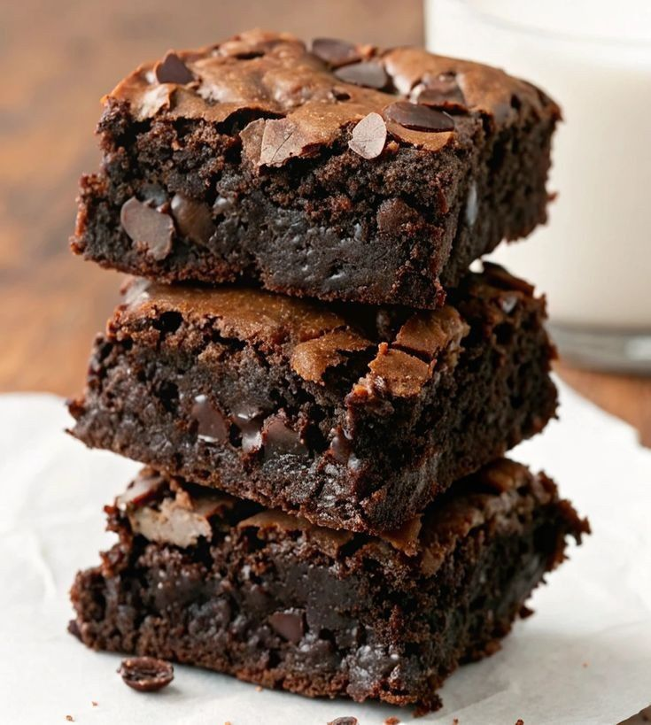

Como fazer o melhor Brownie de Chocolate

Descrição
Brownie de chocolate intenso, com casquinha crocante por fora e interior
macio e úmido.
O sabor marcante do chocolate derrete na boca e conquista a cada pedaço.
Perfeito para quem ama sobremesas simples, irresistíveis e cheias de
sabor.
Ingredientes
- Chocolate 200g
- Manteiga 150g
- Ovos 3 unidades
- Açúcar 200g
- Farinha de trigo 100g
- Chocolate em pedaços 100g (opcional)
Passo a Passo
-
Derreta 200 g de chocolate meio amargo com 150 g de manteiga até formar
um creme liso.
- Acrescente 200 g de açúcar e misture bem.
- Incorpore 3 ovos (≈150 g), mexendo até a massa ficar homogênea.
-
Adicione 100 g de farinha de trigo aos poucos, misturando delicadamente.
- Misture 100 g de chocolate em pedaços (opcional).
-
Despeje em forma untada e asse em forno médio por 25 a 30 minutos.
- Agora é so servir e porcionar. Bom apetite !
Página inicial